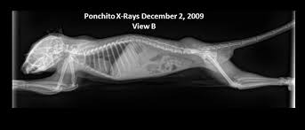

Most people have never heard of sugar gliders, but they make awesome pets if you know how to care for them. Some things to help get you started are:
Males and females also have different needs.
Notice the bald spot on the glider on the left. That indicates that he is an adult male. Treat him accordingly
One of the most important things about taking care of your sugar glider is to make sure that you are feeding them the proper foods in the right amounts. Skeletal health is one of the most crucial areas of this animals life. Gliding requires tiny, strong, healthy bones. Make sure you read up on sugar glider diets before committing to this pet. Here's a link to help get you started.
See here for information about some sugar glider color varieties.
Once you have caring for your sugar glider down, you can really start to enjoy the privileges of owning one. The best things about having a sugar glider in your life are (in descending order):